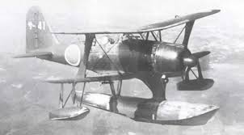

Поплавковый разведчик-корректировщик Мицубиси тип 0 модель 11 «Рейкан» («Зерокан»), Мицубиси F1M2 (кодовое имя "Пит")
Одномоторный цельнометаллический биплан с основным центральным поплавком и двумя вспомогательными подкрыльевыми поплавками. Разрабатывался как специализированный катапультный разведчик-корректировщик артиллерийского огня для линкоров и тяжёлых крейсеров Японского Императорского Флота.
Первый опытный образец самолёта Ка-17 (F1M1) с двигателем Накадзима Хикари 1 приступил к лётным испытаниям в июне 1936 г. Испытания выявили у гидросамолёта множество «болезней», главной из которых являлась плохая путевая устойчивость. К тому же F1M1 имел неудовлетворительную мореходность.
Два года ушло на серьёзную переделку конструкции. Для F1M сконструировали новый центральный поплавок взамен поплавка от гидроплана Накадзима E8N1, стоявшего на прототипах. Место мотора Накадзима Хикари занял более мощный двухрядный 14-цилиндровый двигатель воздушного охлаждения Мицубиси Зусей 13 (такой же, как на истребителях «Зеро»), развивавший взлётную мощность 875 л. с.
Усовершенствованный вариант гидросамолёта под обозначением поплавковый разведчик-корректировщик тип 0 модель 11 (F1M2) был запущен в серийное производство в 1940 г.
F1M2 вооружался двумя синхронными фюзеляжными 7,7-мм пулемётами тип 97 модель 3а с боекомплектом 500 патронов на ствол, ещё один 7,7-мм пулемёт тип 97 (Lewis Mk.III) с боекомплектом 582 патронов (6 стандартных магазинов) устанавливался на турели в кабине лётчика-наблюдателя для обороны задней верхней полусферы. На консолях нижнего крыла имелись узлы для подвески двух 60-кг, либо двух 30-кг, либо шести 20-кг бомб.
В начале войны на Тихом океане, в боях за Филиппины, на Новой Гвинее и Соломоновых островах F1M2 применялись с плавучих баз, позднее их использовали с линкоров, крейсеров и с берега. В основном «Рейканы» использовались в качестве разведчиков, корректировщиков артиллерийского огня, лёгких бомбардировщиков, противолодочных самолётов. В июне 1942 г. на Алеутских островах они осуществляли бомбометание с пикирования; там же обеспечивали прикрытие японских позиций с воздуха как гидроистребители.
Всего выпущено 1118 экземпляров F1M2, производство прекращено в марте 1944 г. На вооружении эти машины состояли до конца войны.